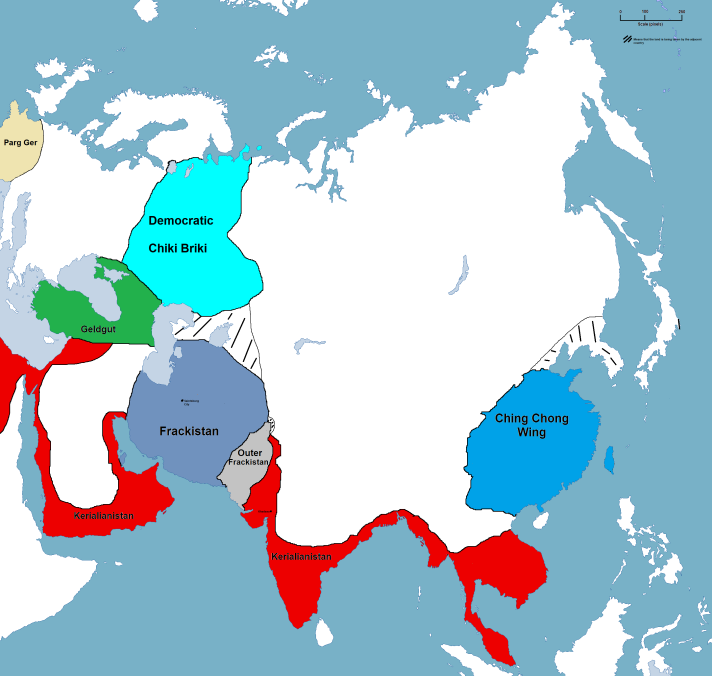

March 2, 2017 - September 29, 2017 - Funhouse era
Server was called DMW's Funhouse and stayed inactive (we're talking 20-30 messages over the course of four months), nothing of interest ever happened.
Server was called DMW's Funhouse and stayed inactive (we're talking 20-30 messages over the course of four months), nothing of interest ever happened.
Upon Ibrahim/D34DM3M3's discovery of NationStates, over the next few weeks people flocked to it, building their own nation and using the DankHouse and other spin-off servers to create this whole kind of RP thing. Another thing that contributed to the beginning of the DankHouse was a shitty music bot TEK VII made known as dankus_musicus, which lasted for about an hour before it essentially killed itself and they lost the files.
Lesser known among the wider DankHouse community, the Map Game was something created out of sheer boredom where a blank map was taken from Google Images and NationStates countries would fill the map, invading each other and building themselves up each "turn" (day). It attracted a lot of attention among the few that followed it, but eventually was retired, though it wouldn't be the last map game. This also marked the introduction of Unbelievaboat, a currency bot in which people could "work" for money. It would prove to be instrumental in the DankHouse's growth.  That is one of the first maps. It was basic, primitive, and almost completely unbalanced.
In March, I was contacted by VulgarPotato, a guy from Epping Boys (I think) on Discord, I'd previously met him through Skype a year prior. He showed me this thing called the Discord Nations Treaty Organization (DNTO), which was essentially a Discord political roleplay thing where people would make their own country-servers and manage them. It was entirely teenager-run basically, with people from all around the world. It had a map imilar to the Map Game (TMG), but was much more complex and actually functioned properly. I decided to try and sign the DankHouse up, but we were rejected because of some shit to do with the rules, so I made a new server known as the DankHouse Liberation Front (DLF). Soon after DLF was accepted, infighting led to the DNTO collapsing and the Discord Democratic Nations (DDN) was formed from its ashes by Vulgar, myself and a few others. It went pretty well for quite a few months, in fact there was a whole Wikia dedicated to it (which is where you found the DLF, though had misinterpreted it as the DankHouse). Then, like always, Alvin came in, and the whole thing fell apart like a sandcastle in the rain. I won't get into specifics, but I eventually left the DDN and deleted the DLF, and as a result it had a domino effect as all the Carlo people left the DDN (Ibrahim, Marcus, Roman, etc.), and now it's inactive as balls (if you'd like to check it out for yourself, the link's here: https://discord.gg/uCVYg9) During this DDN period which lasted for the better part of 6-7 months, the DankHouse stayed pretty much neglected, with Unbelieveaboat solely holding up the server, though even that went south for a while in something called the FAIRHOUSE ERA. There was a bit of an argument between Ben W and myself back in May, and he got so pissed off that he made his own version of the DankHouse called the Fairhouse, which I believe at its peak had 11 people in it, and was a crummy rip-off of the DankHouse but filled with anti-DankHouse sentiment, and he even went as far as to make his own version of TMG, being the third iteration (the second being a failed revival sometime in March by myself), which was abandoned after one or two turns. The Fairhouse was deleted, and a month or so later Ben W came back.